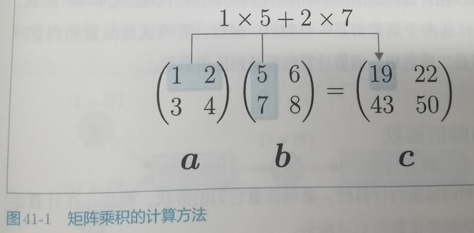

41.矩阵的乘积
41.1 向量的内积和矩阵的乘积
1.向量的内积:
向量的内积就是相应元素的乘积的和.
2.矩阵的乘积:
就是对应行和列的相应元素的乘积的和.

使用Numpy的Dot函数就可求解,当输入都是一维的执行的就是向量的内积,当输入都是矩阵计算的就是矩阵的乘积.
41.2 检查矩阵的形状
执行矩阵乘积的时候有一定的限制,第一个矩阵的列必然要和第二个矩阵的行相等,这样得到的结果就是第一个矩阵的行和第二个矩阵的列这样维度的矩阵.这个形状检查工作是矩阵相乘必不可少的步骤.
41.3.1 向量和矩阵的反向传播思考
正向传播,反向传播需要求每个x对L的影响
首先我们知道每个x都会影响所有的y值,然后每个y又都会影响L的值,所以我们需要知道每个y对L的影响,和每个x对每个y的影响
然后就写懵逼了,不知道要怎么计算了.中间主要差的那部分就是偏导的求法了.再慢慢思考一下,实在不行就先记结论好了